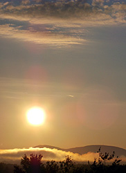

Many people have commented about dramatica changes in the sky. They’re not sure if it’s Mandela Effect or something else.In comments, people describe the changing color of the sun, the configurations of the stars, and the size and appearance of the moon. I’ve also seen the occasional chemtrail reference. (The latter topic could easily take us in the realm of conspiracy theories I’d like to avoid. Nevertheless, people are reporting more of trails.)
I’m creating this article (and moving sky-specific comments) so they’re all in one location.
Does the moon sometimes seem to reverse its course, traveling west to east instead of east to west?
[Originally a comment at the Nelson Mandela article.]
I haven’t been paying attention to the Moon, but I remember being very surprised to see the Moon during the day when I was a kid, as if it was something absolutely impossible.
But it may not mean anything.
It’s not really the moon’s path that strikes me as odd, but the position in the sky. It was further south for all my life and now it is more north. The sun moved in the sky too. It’s not the shifting with the seasons either. It’s changed position in the sky.
Absolutely! I can remember that bothm my ex-wife and I noticed that the moon had completely moved out of place. We were both working on a new Celtic Moon Calendar (for ourselves) and were highly aware of the moon’s patterns; however, now, I can’t tell you anything precise because it has changed so much.
Most people thought we were crazy, but a few friends also noticed that it was much closer and in a different position in the sky.
Your are exactly right I noticed the something year gardening I live fresno CA.and it did move north…
I grew up in LA and always remember the sun setting between two buildings during the summer. One day in August, I noticed the sun had been setting way more North, on the right of the buildings . I asked my grandma about it and she was kind of confused but didn’t say much.
In the 90s, the sun was warm and yellow. It gave everything that 90s glow, but now things feel different . I look at old pictures and that colour makes me nostalgic.
I remember the moon having a face of a woman, or a bunny, depending on what you focused on. It wasnt until a few months ago I went to look at the moon and realized the shadows had shifted. The face is only half showing and the rabbit is tilted.
I never heard of Supermoons until 2010? It was supposed to happen once every ( ) years? Now there are multiple supermoons a year!
There were NEVER chemtrails when I was growing up. No way. I was a daydreamy kid and was always looking at the sky. I started really noticing them around 2007? Maybe? All the clouds were different before chemtrails.
I have noticed the change in color of the sun as well. And I don’t remember chemtrails until at least 2005… The moon DOES seem different… And I don’t remember supermoons until attend 2010 happening so often. I do remember, in the call or spring of 2001, maybe, the moon being extremely big and very red. It frightened me, I actually pulled off the road and called a friend. And, it seems colder to me. Summer seems so warm, now I wear jeans and carry a hoodie and I’m in the same basic area…
I remember clearly learning in school that Mars had no moons. I remember it absolutely–but now apparently it has two moons? I KNOW I’m not remembering wrongly, and at least one other classmate has corroborated learning about no moons around Mars, but it seems there are.
[Originally on Comments page 4.]
Me too!! I got reamed out a few months ago for saying very matter-of-factly that Mars doesn’t have any moons: only to google it and find: nope. Two moons. Freaked me out.
Does anybody else recall the sun being different? I remember when I was a young boy in the early to mid 90’s the sun seemed to be much more yellow and less bright. I recall one day at the outdoor pool that the sun seemed much whiter and harsher, and recall thinking that the sun getting brighter must have been a natural thing, but I now obviously realize shouldn’t happen. Seeing some people mentioning the colour of the sun brought this memory back. So, does anyone else recall the sun being more mellow and more yellow coloured?
[Originally on Comments page 5.]
Rectus,
This topic has been raised in public comments, but also in private (via email and in “shared in confidence” comments), so you’re not alone in that memory.
While sunlight does seem to change color relative to the environment (other colors around you) as well as season and latitude, most people don’t change residence radically enough for that to be an issue.
I’ll do some research into this as a natural phenomenon — related to things like pollution, El Nino weather patterns, etc. — to see if it’s normal. If that’s not a reasonable explanation, I’ll add it to an upcoming poll to see how many recall sunlight looking different.
Thanks!
Cheerfully,
Fiona
Have to admit, the last couple of years I get burned even driving in my car (window side). After 15 or so minutes it seems I am already getting red. Used to be able to stay out all day never bothered me. I still get tan, but the sun just seems MUCH more intense (and , yes, much more white). Sunlight now, seems bright , blinding white. Where as before, it seemed to have a much more warming, yellow light. For me personally I started noticing this in 2001. And it seems to have gotten much worse the last 5-6 years. Before anyone dismisses this, I would suggest a quick internet search, you may be surprised. I don’t believe this is just a “false” memory as many people would have you believe. There are just WAY to many people that have noticed it. Mike
Yes – I was born in 1949, and the sun was always a cheery yellow. Suddenly, in 2002 it became bright white and very harsh and hot. I wondered if maybe the chemtrails were to cover up the heat… Not sure about much of anything, lately.
[Originally on Comments page 5.]
I certainly remember it being more of a yellow/orange. That’s why as a kid I would always color it that way when coloring with crayons.
When I Googled “What color is the sun?” it turns out that, if we could see it from space, it would appear to be bright white. This is a change from what I learned as a child, that the sun not only LOOKS yellow, but IS yellow in color. Every kid colors the sun yellow. When, how, and why did it turn white? We are living in interesting times.
Yeah, I remember being taught in school, as well, that our sun is yellow because it does not burn as hot as the stars that are white. I suppose that it is possible, though, that my teachers did not know what they were talking about. (it wouldn’t be the first time…) If they really did not know what they were talking about, though, I wonder who started this statement that the sun is yellow because it is cooler than white stars, and why…
Just a few years ago, I was walking outside, and thought it was weird how everything looked blue. Like..instead of the sun putting off a warm yellow glow, it was putting off an intense blue/white light.
We are not the only ones. This man from youtube says so himself, that the sun is in fact white now, but when he was young, he recalls it being yellow, not white. https://www.youtube.com/watch?v=ZGYKs00FsRo Every morning on the way to school, I always pay attention to the sunlight, hoping to see a warm morning yellow sun, buut damn. It’s just plain white. I myself recall the sun being very yellow. I researched and people answer this now by saying that “The sunlight is white because it is the combination of all the colors, producing white.” Fine, I get it, but why aren’t they debunking or explaining why the color SHIFTED from YELLOW to WHITE?
By the way, I dont know if any of you guys like anime, or in particularly, Naruto, but my analogy is pretty freaky. In the anime, there is a spell to make the moon shine a bright, blinding white light to the whole world, putting them in their own universe of dreams, and coincidentally, in their own little “alternate universes,” the sun depicts a bright white light. Doesn’t that seem preety similar to the real world?(Leaving out the whole spell things, obviously.)
(Here is a link to a picture of the anime showing what I described if you want to check it out: http://vignette2.wikia.nocookie.net/naruto/images/a/a9/Eye_of_the_Moon_Plan.png/revision/latest?cb=20http://vignette3.wikia.nocookie.net/naruto/images/a/a9/Infinite_Tsukuyomi_Shining.png/revision/latest/scale-to-width-down/300?cb=20150927040819150827123329 )
For a few years when I looked up at the sun, I would see a dark indigo centre with a blinding halo of white light around it. Now when I look up at the sun, I’m relieve to just see white and not indigo. I do remember it being yellow as a kid though.
Wow, I distinctly remember a yellower, less bright sun from childhood as well! I remember thinking about it as a teenager, how it seemed so much brighter/whiter than when I was young. Tried to tell my parents/family members but no one else seemed to notice.
I was born in 2000 and until around 2008, the sun had always been dark enough for me to look straight at it without sunglasses while squinting my eyes. Now I have to pretty much close my eyes while I’m outside on a bright, sunny summer day even when I’m not looking directly at the sun. Until now, I have never heard about the sun’s color being white. Back in preschool, we were taught that the sun was yellow.
In stephen hawking book…. a brief history of time he tells how Galileo in 1609, looked through the just then invented telescopes and saw Jupiter had satellites surrounding it and therefore Jupiter could not be orbiting around us but something bigger… the sun and therefore the old aristotle/Ptolemy model was dead. If Galileo could see Jupiter’s moon… then why couldn’t he see mars moons??? Mars never had moons.
[Originally at Comments page 8.]
Now that is a great observation! Never occurred to me. I learned that Mars didn’t have any moons. I was shocked to see they were “discovered” in the 1800s. I have posted this somewhere on the site. It just didn’t feel or sit right for a long time that not only did it have a moon , but two of them. Again, nice thinking Mike H.
Hi Mike and Ayla, are either of you videogame players or science fiction fans?
In my reality, Mars always had the two tiny moons, Phobos and Deimos. One of the most famous videogames of all time is the PC game Doom, around 1993, which pioneered the ‘first person shooter’ game style that’s been popular ever since. In my timeline Doom was famously set on ‘Phobos Base’ on the moon of Mars, and later the player travelled to Deimos Base. If Mars didn’t have these moons then the game Doom would be significantly different in my timeline.
Also, Phobos and Deimos feature in a *lot* of science fiction novels going back as far as Edgar Wright Burroughs “A Princess of Mars” in 1917, so this change would affect a century of science fiction and 20 years of video gaming.
I would be interested to see if anyone who’s a SF or videogame fan has alternate memories of a Mars without moons? Or is it a ‘fixed point in time’ for these people?
Seth MacFarlane sings an intro song to the Furturama movie “Into the wild Green Yonder” One of the lines of the song is “Although the moon to which you’ll fly me. Could be Phobos or Deimos”.
I never played doom…. and have never heard of it but I’m not a gamer.
Huh. That is weird, in my reality, Doom was set on Mars itself, not any moons. So weird! I mean I’ve been a gamer from I was 12 thanks to my uncle. This is not something I would readily forget, I KNOW the doom I played was set on Mars itself and there was no mention of moons.
This is so freaky.
I played Doom for years and it was always based on Mars itself since Mars didn’t have any moons. There were two bases set ~20km apart. One of the objectives to move from the first episode to the second was to successfully make the run between the two bases.
Until today, like many things on this website, I didn’t “know” that Mars had two moons! In my memory, it is solidly a planet without any. I don’t know if my heart can take too much more of this
Those comments are unsettling… Especially when you consider that the plot of the game is about alternate realities/dimensions and litteral portals to a hellish dimension. https://en.wikipedia.org/wiki/Doom_%281993_video_game%29
I’m a gamer too and my Doom always took place on Phobos and Deimos. That’s how I learned the names of Mars’s moons in the first place, and I always tought of them as very dark and creepy places.
Mercury is the planet without moons. I only remember there being one planet without moons. That’s it.
References for this reality: http://www.windows2universe.org/our_solar_system/moons_table.html. It lists all the moons (178 orbiting planets in our solar system) and includes none for Mercury and Venus. Visual representation: http://annesastronomynews.com/photo-gallery-ii/the-solar-system/the-solar-system-planets-moons/
I have a question. Has the man of the moon or moon rabbit always looked kinda upsidedown? I remember looking at the moon when I was a little girl and it was almost sitting up, the rabbit I mean. Now I see it and it’s kinda on it’s head. It’s scary, haha.
[Originally on Comments page 8.]
Fern I have noticed that too. In fact I can’t even see the rabbit or the man in the moon when I try. It looks different.
The moon rabbit…
I remember walking home from my bus stop at the age of nine and telling my mom about how the rabbit on the moon had ran an almost complete circle that day (was facing down on the right side of the moon in the morning and was now facing up on the top) she replied that the rabbit NEVER changed position.
I was confused because the rabbit ALWAYS went in circles. (Like the moon was spinning)
From that day on the rabbit never changed positions. This was back in 1990.
I still check on full moon nights/days. I have never seen the rabbit change positions ever again.
Which makes sense, because the moon doesn’t spin, only orbits us.
But before that day I SWEAR the moon not only orbited, but spun as well.
I am probably not describing this quite right… The spinning I mean doesn’t have the dark side ever face us, but the side that does… Like it looks lime it is a dial being turned around and around clockwise and you can tell by the shifting positions of the rabbit.
But, it stopped that day my mom said it never does that.
The moon needs a soul with romance,even a prop should evoke passions.
[Originally on Comments page 7, and Vivek’s comments can bring some added style to any topic. So, I moved this one.]
Poetic, Vivek. Very nicely said.
The positions of stellar objects have been moving out of expected position for several years, most notably the Sun. This has led many to conclude that the Earth’s axis has shifted:
https://axischange.wordpress.com/2014/03/09/earth%E2%80%99s-axis-has-changed-%E2%80%BA-create-new-post-%E2%80%94-wordpress/
However the rotational axis of the Earth continues to point to Polaris (North Star) within margins I can measure (slightly less than 1% wobble, as expected). So I agree with this debunker that the Earth’s axis relative to the galaxy remains stable:
http://www.skywise711.com/Skeptic/Axis/axis.html
The Sun is way off (planets and Moon also), so my conclusion has been that the Earth’s orbital plane around the sun is changing. The Earth is swinging higher and lower over the Sun.
I’ve been using star charts all my life and learned to navigate as a teenage commercial fisherman in New England. A big mystery for me has been, “why aren’t the cosmologists and star charts noting these huge discrepencies?” I’ve used a number of apps and online tools, and they all say the Sun should be where it is, but I know better, never seen the Sun rise where it does now in the Summer. Tracking by hand and simple markers in my yard, I’ve seen that the shift is ongoing, more each year. This guy uses a similar method:
https://axischange.wordpress.com/2015/07/14/simple-solar-measurement-guidelines/
The Inuits in Greenland have noted this, when the Sun rose two days early last year:
https://acenewsdesk.wordpress.com/2014/12/05/their-sky-has-changed-inuit-elders-sharing-information-with-nasa-regarding-earths-wobble/
All of this leads me to conclude that the orbital changes are part of this “Mandela Effect”/temporal disturbance, and that it is a gradual, ongoing process.
“when you have excluded the impossible, whatever remains, however improbable, must be the truth.”
Sherlock Holmes in The Adventure of the Beryl Coronet by Sir Arthur Conan Doyle.
[Originally on Comments page 8.]
I too have noticed this affect but blamed it on global warming… but you’re right that doesn’t align with the sun and stars positioning… I looked at the Inuit site because I used to live n Alaska and that geography has changed drastically for me too… something very weird is occurring.
I am part Inupiaq (Eskimo) & our Elders noticed the same thing about the sun & at the same time as the Inuit; it was at that time that my now ex-wife and I noticed massive changes in the moon’s position.
My ex-wfie is a self-taught expert on the moon, and I was slightly less knowledgeable; we created a lunar Calendar based on 10+ years of research and university learning for our personal religious use.
Fiona,
I don’t know where to put this post, so I apologize for putting it in the Forest Gump topic. It’s not a personal memory, but it’s also not a major memory…
Anyway, up until about 2-3 years ago I’d never in my life heard the term “Super Moon” used to describe a feature of our moon. I figured it was just some new way to describe something that had always been happening to the moon–like people had just coined a term for some phenomena that had always happened, so I just chalked it up to nothing. But now, just yesterday, I was reading an article about a lunar eclipse that will happen this weekend and the article said that the moon will also be a “Super Moon” and I thought okay, I’ve heard that before, and I know it means that the moon looks large, whatever. But the article went on to explain what is a “Super Moon”. According the article, a “Super Moon” means that the moon is slightly closer to the earth than at other times because the moon’s orbit is actually oval (elliptical) and not circular.
I’m dumbfounded. I have an advanced degree, many years of education, and have always had a keen interest in space. I have never in my life, until yesterday, heard that the moon is sometimes closer to earth and that it makes an elliptical orbit. This is entirely new information to me and like so many other perceived changes lately, it’s blowing my mind.
[Originally on Comments page 10.]
Steve, I’m counting it as a major memory, pending more research. I was familiar with the concept of the Moon’s elliptical orbit, but the term “Super Moon” is new to me. One reason it’s in the news so much is because that phrase and “Blood Moon” are used with the unusual frequency of these moons in 2015.
I remember being somewhat puzzled at the introduction of a super moon, and how that was supposed to be a relatively rare occurrence happening every dozen or so years. But now it’s several times a year. Just another super moon – no biggie…
But honestly, I remember when I first heard of El Niño and that it happens every seven years. Why does there always seem to be an El Niño in effect then?
I remember being taught that it was yellow because it wasn’t burning as hot. And my science teacher was a PhD in space science. We had all sorts of NASA things that year… And as far as supermoon goes, I posted earlier that I remember them being more spaced out, but that’s only since about 2010. I don’t remember them at all when I was a kid. I distinctly remember their being a circular orbit.
K. Parker,
I found your reference to Orion, very interesting. I have been a sky watcher my whole life, I am pushing 50. Orion seems to be the one consistent in the sky for me. Every morning I step out at 430am with my dog, and there it is, right where it should be, every season. Other constellations, planets, the moon, the Sun, and yes even the sky are not as I remember them. Things seem to change, and then I hear or read “that’s the way they have always been”. Sure, sure they have. We cant all be wrong ,all the time. Not likely to even be statistically possible. I urge everyone on here, to always be observant, remember as much as we can. No matter what happens in this world, no matter how much fame, fortune, or lack of it one attains, in the end, all we have are our memories. Mike H.
[Originally a comment at Comments page 11.]
Pixar’s Short film “La Luna”- is this an analogy of sorts? Read someone’s interpretation before on Daniel 12 verse 3-4. In their interpretation they stated that the souls of the dead are trapped on the moon until reincarnation. Souls ascending and descending up the ladder but they have no memories being reborn in the natural plane.
Are the 3 characters depictions of Abraham, Isaac, and Jacob? There seems to be some link to mandelaeffect . Some thoughts:
1. Body is up to 75% water
2. Increase in number of births during full moons
3. Female cycles align
4. Waves in ocean increase during full moon
Not sure what something/inclination trying to fully tell me right now but while I attempted to look at that short early this morning (3:05am) my internet and electricity went out and did not come back on until 4 something and then went right back out again. Also, I can not get into my journal…(feel free to delete- maybe just rambling)
[Originally a comment at Comments page 11.]
Daniel, it might be rambling and I’ll admit this doesn’t make much sense to me, but I also have the feeling that it might connect with others’ theories, so… well, I’m approving it.
Comet 86666 reported to be of great concern to NASA due to its size even though it was far from Earth when it passed. Showing last observed 10/09/2015. (Have anything to do with electrical/internet issue ?) S
Ooh, that’s very good information. What if the site issues had very little to do with the software, and I just happened to tweak things right when that comet stopped creating so much havoc…? (Rhetorical question. I’ll be testing this by restoring software, one plugin at a time, as process of elimination. For now, making it possible to moderate comments was a screaming emergency, so I took drastic actions.)
I have always been a new mooner so to speak. So I was the odd woman out. They say it is a alpha female who leads the pack or pecking order.
Another thing I have noticed with those who tend to be alphas or more dominant have the black ring around the color of the eyes. Not the white ring of high cholesterol but a black ring.
Maybe just maybe the black ring has something else to do with the jumps as well as the empath psychic healer.
I’ve always been a “bad” kid. I never conformed or followed the rules. So, for 2-4 second increments, I would always gaze at the sun. No, despite the admonitions, my vision isn’t too bad. Anyway, the sun was yellow growing up. I’m not sure when it changed or if there’s an atmospheric reason for it.
This may sound really peculiar, but I’m posting here…so whaddaya expect?! Mars has TWO moons? Wait! What? At around age 5, I started telling my parents I was from Mars and I didn’t like the humans. I’ve always wanted to go there, despite the hostile environment. I’d volunteer for a one way trip in a second. I did. They didn’t want me. Their loss. Anyway, this could be a misremembrances, but I don’t remember Mars having one moon. I truly don’t.
I’m not the only person, then, who would gladly volunteer to go to Mars! I’m sure that, at 51 and not in the greatest health, they’d never accept me, but I really wouldn’t care if I died on Mars. There are worse ways to die.
And I remember Mars having no moons, as well. Now it has Deimos and Phobos. Well, good for Mars, then, I guess. Now it won’t be so lonely.
Have you guys been able to see the little dipper lately? This has been driving me crazy. I live in the country and have a beautiful starry sky (no light pollution) on clear nights. I have ALWAYS been able to find the big and little dipper. You know, find the big dipper, that’s easy. Then the little dipper will be upside down and pouring into the big dipper. It has been nowhere to be seen for me for at least the last month. I’ll look again tonight. Anybody else seen the little dipper lately?
I don’t ever remember the little dipper pouring into the big… They were parallel and facing the same way? But I have not been able to see it either. So confused
That reply was to Shunshine, but it appears out of order.
Sorry to hear that. At least it’s on a topic-specific page, which should make these conversations a little simpler to follow.
Well, count me in on this subject too! Though I mentioned my dream about two moons previously, I hesitated to mention actual sky changes. I definitely have noticed differences in the sky. First off, I live within view of the ocean on the west coast (California) and up on a hill, so I have a very clear view of the entire Pacific Ocean and the setting sun and moon on the horizon. I have been noticing that the moon and sun have been setting much further in the north than I remember. It confused me so I did some research to see if I was just nuts or if other people had noticed. So many other people have noticed! The Inuit people are the most trustworthy source in this discussion, I think, because they do live so far north and would notice a more drastic change than the rest of us. Not only that, but they have been around long enough in that region through the generations to really notice the changes.
I have spoken to several people who have noticed the moon seemed 90 degrees off from its prior position. And the “rabbit” is on its side. Also, like others, I have no recollection of supermoons prior to the last few years. I remember it was a “big deal” back then when there were “blue moons” which don’t even seem that special in comparison since it’s just 2 full moons in a calendar month. Interesting that I don’t hear hardly anything about blue moons, but we have plenty of “blood moons” the last few years. Hmmmm blue moon/blood (red) moon……lol
~S
I also recall the sun being more yellow and less harsh. Everything seemed to have more of a warm glow rather than a blinding cold colored white. Perhaps if the position or rotation of the earth had changed, the new ANGLE of sunlight rays would cause it to look different. Who knows…
Hi, Sibsiz,
This is probably nothing important, but it still struck me as an amusing contrast at the least: you observed, seemingly in passing, “…blue moon/blood (red) moon…” — is it just me, or is that strikingly similar to a red/blue allusion?
I’d say that it’s probably nothing, but that’s exactly what I’d thought of so many things _before_ coming here, that I don’t wish to brush off much of anything anymore.
Brilliant observation, Closeted team-E! That one flew right past me. (Makes me wonder how many others I see regularly and don’t note.)
“Coincidentally”, the Pantone colour of the year for 2016 is (actually 2 colours for the first time ever) pink and blue (Rose Quartz and Serenity).
On another note – Rain and clouds… I distinctly remember that clouds used to clear after a big rainstorm.
Now, it seems like the relationship between clouds and rainfall is very different.
pookie, I definitely appreciate the information. However, for anyone who’s posting comments: this is the kind of comment that always needs a link.
Here’s what it might have been: https://www.pantone.com/color-of-the-year-2016
While I am undecided on the whole chemtrails conspiracy, I noticed a few weeks ago that trails are appearing much more frequently in my neighborhood than they used to. The trails went from being an occasional sight to appearing multiple times per day every day.
I haven’t noticed anything weird with stars or celestial bodies, but just recently the color of the sky after sunset has started seeming much more intense (saturated). A few evenings ago, the sky looked like a bright sheet of royal blue poster board.
And to respond to the other dream comments, I’ve also had dreams about the sky having two moons. I was never able to interpret those, but they gave me some intense feeling like nostalgia.
Damn. I thought I was the only one who noticed that sky’s color changed. It’s definitely looks more saturated now. It looks like someone took a high-resolution picture and replace it with low-resolution one. Also, the sky feels less “lifelike and real” as well to me. There’s something definitely weird going on. I’m scared.
Fiona,
https://www.youtube.com/watch?v=7TdNzdgqzHc
I don’t normally put much stock in some of these videos. BUT I have been following this ladies footage of an unknown object/planet for a few weeks. And it has now started to show up in the mainstream media. This guy does a pretty convincing job of proving it is something real (I actually thought he was trying to debunk it at first.) Please give this video a view if you get time.
Now a few things
1. These photos/videos have been starting to show up more, all around the world.
2.This could fit in the sky changes article
3. Any guess on the date of the footage?? That’s right 9/22-9/23
4.And lets not forget the “Floating Cities” showing up
5.I am never sure what to think of the whole Plant X/Nibiru thing, but maybe CERN really did open up a portal/dimension/parallel universe, I don’t know.
This footage could truly fit into a couple of different topics. Not sure how far you want to go with this (if at all), and it’s ok if you would rather not. Just found the dates extremely interesting. Mike H.
Brilliant discovery! I’ll watch the video later, but the coincidence of the Sept 22-23 dates was enough for me to approve this comment and say, “Ooh, sounds fascinating!”
Side note: If you want to stay far away from (off-topic) Nibiru ideas, do not read Zecharia Sitchin’s books, and be sure to avoid “The Genesis of the Grail Kings,” by Laurence Gardner. (My husband recently became hooked on Sitchin’s series, which I haven’t looked at, yet. I’ve been s-l-o-w-l-y working my way through “…Grail Kings” for the past year or so, double-checking Gardner’s footnotes.)
Fiona,
Your comment on the authors and books, made me laugh! I am familiar with them—–but won’t go that route on this site, I promise:). I actually had “the Genesis of Kings” on my Amazon wish list, so I wouldn’t forget about it. I read some WIDE ranging topics , that are definitely not mainstream media fare. Not saying , I believe all of them, but I think when dealing with “unknown, unknowns”, the more well rounded your knowledge base is, the better. Mike
Fiona,
Been watching this for a long time. But when the Earth starts getting hit with more geomagnetic storms, an uptick, I should say, as we always are to a degree. I tend to see patterns of more synchronicity. At first I wasn’t sure, but it is something I have noticed for years. I keep on eye on space weather (yes, another hobby of mine, LOL), I will leave link to NOAA latest warning for 11-2, 11-3 (Monday, Tuesday) of this week , for those interested. We will be at a G3 level which are strong Geomagnetic storming levels (the scale is G1-G5). Anyway, just thought everyone might want to try and be alert to any ME’s, or more synchronicity than normal.
Mike H.
http://www.swpc.noaa.gov/
Almost forgot, this link will show the scales a bit better.
http://www.swpc.noaa.gov/noaa-scales-explanation
Mike H.
I work 3rd shift and I smoke so I am outside at night all the time and I can’t even begin to tell you or explain some of the strangeness I’ve seen in the sky… one night there was a bad thunderstorm and my friend and I were under an overhang when three red lights started appearing through the sky… I said to my friend you see those red lights dancing in the sky right?. She said yes… I said… how c a n that be seen in a thunderstorm? ( The lights did not appear close but up in the atmosphere) and she just shrugged and said drones? I replied in a thunderstorm??? we never talked about it again… but we see strange objects all the time and my friend chalked them up to satellites or drones.
I’ve seen changes like this too. In school I was fascinated by science and astronomy, and I studied it extensively and Mars did NOT have moons then. Not to mention I’ve noticed compared to younger years constellations are NOT where they where from modern nights.
Orion’s belt, the big dipper and little dipper amongst others are different, at the time which was like a couple months ago I was puzzled but figured I must somehow be mistaken as I was around 13-16 when I studied astronomy but since I’ve learned about the Mandela effect, I don’t think I am mistaken.
This may be bad memory, but I don’t remember it being dark this late in the morning for this long. Until daylight savings time this past weekend, it had stayed dark well past 7am for weeks. Now with the time change its still 6:30 or so before it’s really light outside. It just doesn’t seem right.
I can’t say for sure about Mars having moons or not.
For me, there were no chemtrails in the sky growing up. I remember seeing them for the first time shortly after the turn of the century, in fact everyone around me at the time was pretty surprised by them and wondering what they were. These new ones didn’t look anything like the old ones, and the huge number of them all in the sky at the same time also was new. I remember someone at the time saying, “I think WWIII just started”. It was startling at first, then…. most everyone just adopted the attitude that it’s always been that way.
Mandela Effect may explain why so many consider chemtrails a “conspiracy theory” while others wonder why there’s even any question about them. Once we figure out what ME is, anyway lol.
Hopefully Stephanie chips in here, she has an interesting sky observation to share.
In December 2012 a friend of mine wanted to sell me his telescope. It was a very powerful and expensive telescope and he was selling it cheap but I wasn’t sure if my 9 year-old daughter would enjoy using or if it would be a wasted purchase. Being the salesman he is, my friend told me to take it home and “test-drive” it. I brought it home on December 8th 2012 and for the next couple weeks we used it (mostly), to look at the moon. Both my daughter and I became very familiar with the Lunar surface. So much so, that she could sketch the Moons general appearance from memory. However, we ended up not buying the thing and on Dec. 21st 2012 I returned it. Then, a few days after Christmas, I walked outside and just happen to glance up at the Moon, (it was almost full but not quite), and I was FLOORED!! The whole thing had ‘flipped’, (I think), and was no longer the moon I’d grown up seeing. It certainly wasn’t the same Moon we’d been observing the last couple weeks! I was by myself but I literally stopped and said out loud; “WHAT THE @!#$%?!?!”. I went inside and without saying anything about what I wanted them to see, I had my wife and daughter come outside. I was careful not to point anything out to them. Suddenly my daughter exclaimed; “WHAT THE HECK!?!” Hahahaha!! Then, without being asked to opine, my wife followed with; “Did the moon change?!?!” I was relieved to hear them both confirm it for me without any prompting because I was starting to think I’d flipped my lid. I decided NOT to ask my friends and neighbors because it makes me sound delusional to try and articulate my observations. I looked around online and found a few radio streams and/or blogs talking about the same changes we’d observed but until now, have kept it pretty much to myself. I DID mention it to a close friend and he poo-pooed the notion then asked if my years as a kickboxer may have caught up with me in the form of Pugilista Dementia. Maybe for MY brain…but surely my wife and daughter have a clear and unblemished view. Thank you for reading. I have so many other ME experiences and as I read through your site, I’ve realized that I’m not alone. Until next time……..M
M.M When you look at any object thru astronomical telescope it gets flipped.You can’t observe much of moon by naked eyes so relax things get inverted in astronomical telescope.
(Good catch, Vivek. Since I’m often looking for snide and sarcastic comments — and off-topic interjections — when I’m flying through comments, that got past me.)
To elaborate on what Vivek said: it depends on the kind of telescope being used.
From Sky and Telescope:
From Telescope.com:
to me the moon has flipped, i have lived in the same place for 40 years, and seen the moon regularly. and the moon doesnt look right.. the shadows on the craters are in the wrong places.. ( I have telescopes and scopes and not one of them inverts the moon as it would be rather useless even a basic astro scope one). Hell i even can get decent images via binoculars on the moon, maybe not as high a quality but.. And i am sure the moon has flipped, will flip again at some point.
I have only observed the moon with the naked eye. It has flipped, or I should say rotated, without a doubt. More than what is scientifically possible, which is a little bit of tilt in either direction.
I have the dark spots memorized. I remember what it used to always be. In the past year, it has rotated up to 180 degrees, but It keeps changing.
Sorry for such a lengthy comment. I’ve been wanting to share my observations about the sky, especially the moon, but wanted to do some research first to see if there’s an explanation for what I’ve been seeing. I found out that the moon can “wobble” due to something called libration, but the movement is only six degrees. For me, that doesn’t explain the differences I see in the moon, which seem to include the actual shape of the craters as well as the current moon shifting far more than six degrees. There are a plethora of YouTube videos by people insisting that the moon is different. It stood out to me that multiple videos are dated September 22/23, of various years. I’m not qualified to discern if videos are real or fake, but it’s interesting anyway, the number of people noticing anomalies with the moon.
I have not recognized our moon in recent years, and have been paying extra attention to it since coming to this site a few months ago and finding others who feel the same. The most noticeable difference for me is the face/man in the moon no longer being there.
On 10/25/15 I saw “my” man in the moon again, for the first time in a long while. I realized that when my man is there, I can also see the rabbit that some here have been missing. The ears of the rabbit form creases (smile lines) of the man’s right eye, so the rabbit is essentially turned so it’s looking up. I searched images online for the man in the moon, but what I’ve found doesn’t look like my man, and is the anyway the unfamiliar moon I’ve been seeing the past few years. The face out there online (usually outlined so folks can see it) is ghoulish. The mouth forms an “O” and the eyes are round, surprised looking. My man in the moon looks friendly and amused. It has what you might call a Mona Lisa smile. I started sketching it that night. The sky has been cloudy here since then. I’m anxiously awaiting the next clear night with a moon full enough to see if MY man in the moon is still there.
My other observations:
The sun is too bright white and intense instead of warm and yellow. I burn much easier now. I notice the brightness/whiteness more on slightly overcast days, when it’s especially blinding for me. The blue daytime sky is not the pure saturated blue that I remember; it’s washed out, lighter and brighter.
I have seen chemtrails my whole life. Born 1982 west coast U.S.
I don’t remember so many planets being visible to the naked eye. I remember being able to see them sometimes, and it seemed like special/rare occasions. Now a few are pretty much always visible. The eastern sky at dawn during the last week of October had Venus, Jupiter, and Mars in a planetary trio (any grouping of three planets within a 5 degree circle. The last one was 2013, next one is 2021). You could also see Mercury below them in the same line, if the sky was clear enough. They lined up so perfectly and were incredibly bright, my first thought was of a beacon (sorry if this is too speculative and conspiracy theory-ish). After seeing the planetary trio one morning I was intrigued enough to seek out the above info, then wake up before dawn each day to look again. It’s probably not ME related, but they stood out so much to me and gave me such a weird gut feeling, that I wanted to include it.
I am curious, as always. Do any of the other posters on here seem to sleep deeper , when there is no moon?? I have noticed this “pattern” since around 2010.
since around 2010.
Not sure where to put this question , so here goes. Since 2010, no matter what time I go to bed I wake up within 2 minutes either side of midnight , and then again within 2 minutes or so either side of 3 am. I get up at 430 am. It doesn’t matter if I am traveling or at home. This happens every night , for the last five or so years. I usually get up , look out my window at the sky, and then go back to bed. It’s actually kind of a strange feeling. Not like I have been asleep , I do dream. And I do get deep sleep. Mike H.
Mike H, I have chronic insomnia that comes in frequent cycles. I fall asleep then wake between midnight and 3. I’ve never noticed a correlation with the moon being full, but I’ve never looked for one.
Hey Mike, my sleep patterns have changed drastically since September, maybe around discovering ME. I’ve noticed I sleep longer, not necessarily deeper, when there is no moon, I just assumed I was catching up on sleep, yet after your post it clicked there was no or little moon.
Anthony,
Exactly, not sure if has to do with gravity, and tides or what. You are right about the sky, things just don’t look right to me anymore. Things seem “shifted” , out of place or something. It’s been happening over the last 5-6 years for me. Thanks for the reply, Mike H.
Recently the moon and more so the stars, don’t look as far away as I feel they should look. To be more accurate, I’d say the moon and stars look the same distance away.
Sorry, but: as interesting as this would be at another website, the topics of sleep deprivation and insomnia could take us far off the topic of how the Sun, the Moon, the stars, and the sky seem to have changed…
I thought people might be interested in this. Another strange photo above Wales.
https://www.youtube.com/watch?v=dtExn68x3Q8
Another dimension? Very odd picture. To me , it looks like Emania (sp.?) . The moon world/dimension.
Mike H.
Kind of held off on posting this. I know others have. But, laying in my bed last night looking out my west window I couldn’t help notice the moon. I wracked my brain trying to remember when I first started noticing the orientation and perspective change. The best I could do was 2011. I just do not remember the moon being , as large and horizontal. When not full. I have watched the sky my whole life. Taken college level astronomy classes, and things just look so different too me. I can’t quite put my finger on it. Like I’m looking at different sky. The moons path seems so off also. Higher , then lower than it used to be. Even the face ( craters , landscape) look different. Also , I always thought it was me, but I never remember seeing the moon in daytime as much as we do now. I should preface this post, I have said before, I tie everything to dates , I mean everything. The part that bothers me most , is I just can’t remember when I first started noticing the moon like this. My gut says 2011. Mike H.
Mike H, that’s especially interesting because you can’t tie the change to a date. From what I know of you, through many conversations there, that seems like an anomaly in itself. I’m wondering if there’s a “forgetting” aspect of this, and maybe it’s not consistent, but some of us don’t forget the way others do…?
I’m looking at the “doorway effect.” (It’s also called “location-updating effect,” but since Scientific American calls it “doorway effect,” I’ll stick with that. Ref. http://www.scientificamerican.com/article/why-walking-through-doorway-makes-you-forget/ )
What if people have been sliding between parallel realities (or using holodecks for these life experiences) since forever, but part of the program is to forget the previous reality/holodeck, when you leave it? What if the “forget” command isn’t as effective with those of us with alternate memories? (It works part of the time, but not always.)
What if a glitch in the programming becomes more obvious with anomalies — like dual memories, or not being able to recall when a major memory first seemed out-of-place in this reality?
Just some idle thoughts, but your comment was a surprise — a break in the pattern, if you will — and raised new-ish questions.
Fiona,
Great post , I will be really looking into that link. This really just becomes more and more interesting.
Your right, I just don’t forget. This one really bothers me. Like something is erased, and I really don’t like the feeling. I’ve noticed things so long, I’m not used to “missing” something. But it just doesn’t look right. Like I want to remember , but just can’t. Like its “blurry” or “fuzzy”. Something is there , I just can’t peak through the veil. Sounds ridiculous to some I’m sure. But I know you understand.
Thank you again for that link. I’m iff to it right now. Mike H.
Fiona,
sorry about that last post please delete if you can. Tried earlier, and lost a post with a lot of ideas. Oh well, I will try again LOL! I like the site layout, just trying to get used to it.
That article makes a lot of sense. So humans, when going through doorways virtual, or real, purge their memories of non-important things (at least what we PERCIEVE as un-important), such as a child’s book, actor’s passing , ect, etc. :-). Except for what ever reason (John D. alluded to this), some of us don’t have out “hard drives” purged as often as others. Why that is , would be anyone’s guess.
So I might propose an idea. When we (meaning us on this site) notice a ME, maybe we are close to a doorway, vortices or portal. Maybe they (ME’s) happen once we go through one? Tinnitus, could come into play here also, a form of hearing frequencies connected to a wall, or barrier, near one of these gateways (or do I say it , Stargate? ). Maybe the collider’s are actually opening portals, doorways, allowing all humans (and , I assume all life forms) to pass through these openings. The problem is some people forget certain things or “mis-remember” when passing through them, but we do not.
As usual, this probably could have been said in about 1/3 of the space I used by someone more articulate. This post is missing some of the things I wanted to get out initially in the original post , but I will just assume in some timeline your reading it. Probably shaking your head, hopefully not hitting it on your desk. I have a dry, sarcastic humor—hope it’s not to obvious. Mike H.
Mike H., thank you so much for this comment! You’ve put together several ideas that have been “loose threads” for me, and I think this is brilliant.
This is huge. You see, it actually meshes with one of my leading (and hotly disputed) long-term theories from ghost hunting: That the anomalous, brief EMF spikes we see at supposedly haunted sites aren’t the ghosts themselves, they’re energy leaking in from whatever opens when something comes through and seems “ghostly” at those locations, at those times.
—-
—-
So, what if my EMF theory about haunted places is correct, at least in some settings?
And, what if, at those time-space locations, the portals (or whatever) ghost hunters detect with EMF meters (etc.) are the same portals you’re describing?
I am very excited about this possibility. I’m not ready to leap on it with pom-poms and a bullhorn (that’s a scary image in itself, LOL) but I’ve been alienating some ghost hunters for the past ~8 years with my portal/EMF theories, so I’m not shaking my head… I’m nodding enthusiastically.
And I’m wondering what answers I might get if I asked people who spend a lot of time around haunted places, how many alternate memories they have. Is it possible that being near one (or more) of those portals correlates with a higher incidence of the Mandela Effect? (The good news is: Boy-oh-boy, do I know a lot of people who are around haunted places regularly, and sometimes on a daily basis. LOL)
Also — and this could be very cool — what if deliberately spending time near a portal, we’d notice an increase in the number/intensity of those alternate memories?
Of course, I’m stacking one “what if” on top of another, but I can’t begin to describe how well your theory fits with what I’ve been talking about in ghost hunting circles.
What if a whole lot of “haunts” are actually time-space access points to alternate realities? And what if tinnitus (or variations in it) was another way of detecting those time-space access points, just as EMF seems to be?
And, going further down the sci-fi path: What if, over the past ~12 years of ghost hunting popularity, the extra contact between realities (by people deliberately spending time at/near those portals) has expanded the activity of those access points? (This could be anything from more people passing through them more readily, to more memories activated as we sense the nearby, familiar reality, to… well, I could be writing this all day.)
This will sound crazy-as-a-loon to some, but — for me — this is like finding another major piece of a challenging jigsaw puzzle, and seeing that it fits.
Fiona, you have NO idea how much I have to say on this topic. You just hit about half a dozen HUGE points that I think all tie together , just as you describe, to me your EMF theory makes more sense than any others I have seen. This isn’t the “out there Mike”, this is the Mike (date-hound) talking who may have finally found at least part of an answer to a 30 plus year quest. I don’t want to alienate other readers and posters (or bore them), but I think I may send a private email later. Mike H.
Mike H., I’m getting ready to start another website related to this exact topic. It spans more than just Mandela Effect, and it’s just geeky/convoluted/weird enough to compartmentalize at a separate site. And, like you, I think this is very cool as it’s putting together pieces I’ve been looking at, sure they meant something, for many years.
Fiona, Those of us who remember alternate memories could be missing some of the span of time in current reality to compensate for the limited memory space or say neurons that we possess,same as you have to delete some files in a flash drive to accommodate fresh data.What Lorenzo Maccone says is,that you have to lose memory trail to achieve the holy grail of all human endeavor,that is, to decrease entropy.Suppose we have,say,about 5yrs sum total of alternate memories of all kinds,then assuming that we have lost 5yrs of our timeline somewhen in our life,we can expect 5yrs of entropy decrease,implying that we should be looking 5yrs younger.A mathematical brain teaser that needs more working over.
Vivek, that’s interesting. I immediately thought of the experiments with aged individuals, placing them in an environment that mimicked the world of their prime: visual cues, music, TV, magazines, cooking styles, clothing, and so on. And, as I understand it, their biological ages seemed to reverse… only slightly, but it was significant, anyway. (Ref. http://www.nytimes.com/2014/10/26/magazine/what-if-age-is-nothing-but-a-mind-set.html?_r=0 )
So, is it possible that fully recovering earlier memories — not discarded, but perhaps filed elsewhere — and putting more recent memories on the mental external hard drive, could effect this kind of change? And, given the number of people at this site who’ve commented that they seem to be aging differently than many others born within the same time frame, maybe retaining alternate memories — spontaneously rejecting newer ones from this reality — could explain that?
I’m trying to see how five years of alternate memories — displacing five years’ memories from the current timeline — would make a difference, in that respect, unless the alternate memories represent a more compressed (shorter) time, in contrast with this timestream. I think that only works if time isn’t consistent from one reality to another. (Your thoughts?)
All in all, it’s an idle whim and amusement, and wholly unrelated to the Sun, the Moon, etc., but it’s rather fun to think about.
The experiment was more of a cosmetic dressing,a botox injection,the physics of the thing is spontaneous and averse to simulation.I am strictly applying Lorenzo Maccone’s theory of entropy decrease,theory says you have to completely erase memory trail to achieve the decrease.In ME case we might have lost some chunks of memory trail and i am alluding the analogy of digital memory to explain that the bytes that are replaced,being alternate parallel files, are non sequential,hence don’t add to entropy.After all arrow of time is nothing but sequence of events.Look up Maccone,you might get your own varied thoughts.
Interesting theory. Difficult to use here, in casual study.
However, as a ME adjunct to his theories, I’d be interested in whether those with many active dual memories — a larger (or bulkier) memory trail — have increased entropy.
Maccone’s concepts are challenging in a Mandela Effect context. I think they would require erasure of the second memory. I’m not sure it’s possible to enter a new reality without adding the conflicting memories.
My speculation (from my earlier comment) is that we might be able to reset our memories if we cognitively roll back to an earlier time, via environmental cues, even if we only suspend (briefly) the additional memories we’ve acquired to function like “normal” people in the new reality.
Aside: As I talk in terms of memory “erasure,” I’m reminded of treatments that have talked in similar terms, including actual erasure, as “deletion” or “memory wipe.” I’m pretty sure erasure was the term used in early Dianetics and later New Age processes. However, even if those results were achieved, how do we describe those memories: physical/matter, or in a more digital context?
Then there’s memory replacement, and the question of the size of the memory trail that results. See Time Magazine’s How Memories are Made and Manipulated, and Big Think’s Erase Traumatic Memories.
This is an interesting topic, but more of an adjunct to the Mandela Effect, or at least something we can delve into, later. (And, I may move these comments to another page or article, since we’ve strayed far from the Sun, Moon, etc., focus of this article.)
Well in relation to my bird post yes I don’t know if you remember me telling you that I lived in a haunted house. /
I can go into details if you want but most ppl either don’t believe me or are highly fascinated by that comment. I’ve been wondering lately if I don’t live on a portal/vortex thing. Or at least very nearly near one… in fact it’s so strong when we first moved in I asked the landlord outright if anyone had died in the house and if the prior tenants noted any odd activity. The only thing he knew is that he decided to lease on a month to month because no one lasted longer than 2 or 3 months. I have now lived here 7 years so either we are just able to deal with the activity effectively or they “like” us.
Fiona,
I have read, and re-read your post about 20 times in the last day. I just can’t get over how much this makes sense, at least to me. Crazy-as-a-loon or not , that makes at least two of us. Your paragraph about exposure to the doorways/vortex’s/dimension’s , is really a brilliant observation. I have almost no doubt that this may in fact be true. I echo, your thought’s in the PM. Just can’t get over the tie ins, frequencies, energy, shifts, sounds, visual. Also your theory could tie in several “alternative” (I hate that title) idea’s, covering several topic’s. Mike H.
Mike H, when you say the moon was too horizontal, are you referring to the shadow on the moon cutting a horizontal line across it? If so, I noticed that last night too. I checked a couple websites last night, and they showed the phase of the moon more or less correct, but they showed the shadow mostly vertical, and last night it was horizontal. I still don’t know whether the difference between the vertical/horizontal orientation of the shadow has to do with location or something like that, but I found it strange also.
FJ,
That is exactly what I am talking about. I just do not remember the horizontal (phases?) moon. I remember the vertical phases, I have watched those my whole life. It just looks so foreign anymore. Last night was really noticeable to me. I always have this nagging feeling that I am in the wrong place.
In my above posts ,just to clarify ( as if I am ANY good at that , lol), I am talking about my memory being fuzzy or blurry. The only thing I can compare it too is anistesia. Mike H.
Thanks Mike H. I don’t know a lot about lunar phases, but between the night of Nov 19th, and last night, Nov 21st, the shadow on the moon changed places completely. The 19th it was horizontal, with the bottom of the moon in shadow. Last night it was vertical again, with the left of the moon in shadow. Maybe it’s normal, but it seems off to me.
As far as memories being fuzzy, for me all of 2009 is hard to recollect. I’ve seen you and others here say that 2009 is when you starting noticing major changes. It’s kind of scary for me that I can’t remember that year, except events captured in photos. And even then, the associated memories are very fuzzy. My childhood memories from 20+ years ago are clearer than my 2009 memories. I have no idea what to make of it…but it makes me nervous that I could basically lose a year. Perhaps my primary consciousness was spending time elsewhere, but I have no memories to support that either.
FJ,
2009( and actually, only about the last 3 months) was a very big “major” year in my list. Every year since then has really just accelerated (my noticing of changes) . Your bring up of that year , does not surprise me at all. For me I knew (from the geography , initially), something was not right, or I was going to get committed. Same stages everyone goes through here.
1.denial
2.questioning your own sanity
3.then having enough fortitude, to believe and trust your own intuition , to seek answers.
4.And eventually, you end up here.
Mike H.
Mike H,
The stages you listed are quite accurate. I spent a lot of time in stage 2, too much time doubting myself. One big relief in finding the Mandela effect is instead of questioning my sanity or memory, I think “oh that was just a different reality.”
I’m still disturbed about not remembering 2009. It should be filled with lots of memories, as one of my children was born in late 2008.
Some of my childhood memories are very clear, but some years are just gone from my memory. I’ve chalked this up to a somewhat traumatic childhood and blocking memories out. However, forgetting most of a more recent year is making me rethink that.
I remember 2009 and wish i didnt..it wasnt a good year for me. but i have parts of my life that are gone, i remember memories only when they are linked to something, like being bullied, losing my job, etc.. but everyday things.. no just gone..
Martin,
That makes me think: have we had the wrong memories erased?
If there is a function to make us forget alternate realities, what if an error caused memories from this timeline to be erased, while we kept the alternate memories that should have been erased?
FJ, what a cool, kind of creepy concept… I like it!
FJ,
Or maybe traumatic events (or what we perceive as traumatic), are enough to trigger a defense type mechanism (fight-flight response), to cause us to slide over to a different reality? And if we can’t , maybe the memories are just erased (everything is “blanked out”). a survival mode so to speak. The more empathetic certain people are to start with, maybe it’s magnified even more. Mike H.
Mike H,
That makes sense and ties in nicely with what I was thinking. A protective mechanism of the brain…we already know the brain can forget traumatic events, so taking it a step further maybe it can remove our consciousness from a threatening situation. If that is true, can we learn to control it?
Hi all, though in this case particularly Mike H., FJ, and Fiona,
Oy vey. The moon’s definitely turning into a pain in my *ss.
I read the original post about the moon-being horizontal a few weeks ago, in passing, and ran into it again a few days ago (when I searched for possible previous posts about Luna’s orbital distance from Earth). Then I noticed the moon’s terminator line. It’s facing the wrong direction. I’m positive of this, but I’m also positive that it can’t be (this is an all too familiar riff, isn’t it?). I have horizontally-traveling phases of a basically vertical terminator line in memory, which _can’t_ be the case, mechanically. Orbital dynamics are irrelevant to this: regardless of its orbital path, even were that path pole-to-pole, a single light source system must necessarily light the moon such that its terminator line would be oriented in almost the same angle as the Earth’s (allowing for minor parallax differences, of course) — i.e.: if the moon rose in the north and set in the south (we’ll ignore the question of how this might occur), then its terminator line would still have to be roughly horizontal (aside from completely new moons & completely full moons), due to sharing the common light source. I say that, and yet my memory of a horizontally-traveling vertical terminator line persists (perhaps Dali knew something?). What can I say but that I’m still struggling with the fact that my memory says one thing, and simple observation another (and in this instance, I can’t even assume that it’s a simple reason [such as I misheard something, or a reporter got bad data], or even an M.E. [wherein I swapped universes, or the database got corrupted], since I can’t for the life of me work out how a vertical terminator line could occur with the moon’s orbital plane being basically inline with the Earth’s rotational plane).
On a related note, in thinking about the above, I’ve come to a stumbling point regarding lunar phases’ visibility. My primary interests are astrophysics (w.r.t. neutron stars & black holes), cosmology, and various abstract mathematics (group theory, number theory, etc.) — not so much with the astronomy; you want to work out an equation of state, or some galaxy’s Hubble shift, then ja we can talk, but I couldn’t tell you Betelgeuse from Capella (though I passed a college astronomy class equivalency test without studying, so at least my general knowledge isn’t thoroughly lacking [apparently] — or I’m right in having a low opinion of such tests [I’ve passed about 15 other CLEPs/DSSTs]). Nevertheless, finally thinking of the Earth-Luna system, I’m faced with a quandary: just how is one able to view a full moon during full daytime, or a new moon in the middle of the night? I have no issue with the mechanics of this at around sunset/sunrise, when one should be able to to see a _relatively_ new moon or a _relatively_ full moon — but completely full means that the light source is behind you (hence you’re on the night-side of the planet), and likewise a completely new moon means that the light source is in front of you (hence you’re on the day-side of the planet). I must be missing something fundamental (and presumably obvious), but it seems that the trigonometry just doesn’t logically permit one to view a dark face during nighttime or a lit face during daytime (I’ve taken math classes as far as calculus, inclusive, so no: trig. doesn’t present a challenge; if you can elucidate this for me, then please do [I’m being quite serious]).
I must be suffering a rather massive brain fart on this one (which would actually be kind of a relief…), and if so, then my bad. In any event, thank you for your patience, and maybe I at least provided some grade-B grimacing humor (it’s better to make someone smile than nothing at all).
ADDENDUM:
Wed morning (~2am CST) I asked my friend (who see the M.E.s) about the moon’s horizontal terminator line. It didn’t surprise him at all. The night (well, morning, technically) before that, we had been talking about it, and he had then recalled it firmly as a vertical line traveling horizontally. We were involved in the discussion at that, so I hadn’t derailed it by observing that aloud, but I was looking forward to his reaction when I was later to get a chance to mention it to him.
Well, I got that chance the next night. One or both of us switched. He’s now fully on board with the horizontal-line vertical-travel camp, and had never viewed it the other way around. Interestingly, he doesn’t see the M.E.-humorous-coincidence thereof.
CTE, Mike H, et al, re: the horizontal shadow on the moon.
This is interesting stuff. I’ve spent some time researching the moon’s terminator line, and instead of gaining clarity things are more muddled than ever for me. I will admit that parts of CTE’s post are over my head. My trigonometry knowledge is basically nil, so maybe I’m missing something, but there seems to be very little consensus on the web for this issue (where/when a horizontal terminator line is visible).
I found this question posed online:
[So the question is this:
From which parts of the Earth’s surface can you ever see the terminator as a vertical line? Under what conditions?
For extra credit:
From which parts of the Earth’s surface can you ever see the terminator as a horizontal line? Under what conditions?] link:
http://c2.com/cgi/wikiMoonTerminatorSpoiler
The ensuing conversation is interesting. One person is insisting that the only place to see a horizontal terminal line is near the equator, at the Equinox. Their logic seems sound, but of course it can’t be true, as I myself saw the horizontal terminator line and live around 46 degrees north latitude. I have seen this info (seeing a horizontal terminator only at the equator) repeated at other sites, and I also found info that states nearly the opposite, stating that the only place to see a horizontal terminator line is near the Earth’s poles).
CTE, I cannot answer your question about phases of the moon visible during the day, but you appear to be correct in stating “a single light source system must necessarily light the moon such as its terminator line would be oriented in almost the same angle as the Earth’s.” Excerpt from: http://aa.usno.navy.mil/data/docs/earthview.php
“The Moon view also shows the phase of the Earth as seen from the Moon; it is opposite the phase of the Moon as seen from the Earth. For example, a gibbous Moon corresponds to a crescent Earth, a new Moon corresponds to a full Earth, etc.”
Here is a paper written about the moon tilt illusion (where the moon appears to be lit from an impossible angle, facing away from the sun). The math is too technical for me, but perhaps someone else will understand better: http://www.seas.upenn.edu/~amyers/MoonPaperOnline.pdf
I find it frustrating to spend hours researching, only to walk away more confused than when I started! Perhaps one of you can shed some light (no pun intended) on this topic.
Mike,
I saw the EXACT same thing and thought the same thing is you. I have never seen the moon like that. I am so glad you mentioned this.
to me it was as if the moon had moved round a bit i even asked my mum. Must remember to document any odd moon movements I am lucky as i live in the same place for 40 years so i am used to a lot of regular occurances..I have noticed more moons during the day but that could be i didnt notice them it was more of a U shape than a C shape.. best way i can describe it
Martin,
I think we are saying the same thing. And I understand what you mean, by using the C and U.
What I find curious, is that I have looked at hundreds (probably thousands now) of images of “the man in the moon”, and I have yet to see one that shows a horizontal version——because , frankly, it wouldn’t make sense. He would be looking straight down or up., not left to right.
This moon happens every month , according to all the information I can find. As In my opening post, I just can’t “force” myself to remember it before about 2011. I have always looked at the sky, my whole life, from the same location the last 16 years, It just looks “off” to me. Mike H.
I’ve also noticed a great deal of changes in the sky within the last 18 months or so. They are subtle changes, but no less still a lot of changes. I’ve noticed the moon is now almost exclusively in the western sky at night. I don’t know if this is just cyclical, but I’m in my late 30s and I’ve never noticed the moon in the western sky in my entire life. It also appears brighter than it’s ever appeared to me. Also, I have noticed the moon during the daytime much more than I have in the past. I would venture to say that I’ve seen the moon during the day more times in the last 18 months than I have collectively throughout my life. It’s also in the western sky during the daytime. It’s an oddity that I can’t explain. The only explanation that makes sense to me is that my position in the universe has changed.
Does anyone here have a memory of the moon being defined as ‘earth’s natural satellite.’ I had a dream last night that I cant quite remember , and the 1st thing i did upon awakening was to google the meaning of ‘moon.’ I was looking for the root meaning, was hoping it was something like ‘mother, Goddess’. Which i have a memory of, not satellite. Thoughts?
Thursday morning (early) I was up and saw the moon set, but it set in a dramatically different spot than it usually does this time of year. Did anyone else notice?
Hi all,
I was talking with a friend (the one who _does_ see the M.E.s) about the Mars missions, and transmission time came up. This led to Luna’s distance from Earth. I’ve ctrl-F’d this page, and run a regular search through the site, but haven’t seen this mentioned yet:
As I recall, the moon orbits at approx. 0.75 light seconds from Earth (a bit more or less, I don’t quite recall which). Light speed (in vacuo) is 186,282 miles per second, hence 0.75 s ~139,711.5 miles. The moon’s orbit is listed as being 238,900 miles — approx. 1.28 light seconds.
I had noted this some time in the past 2 years, but had simply assumed (as usual) that I had somehow completely misremembered. This Isn’t the sort of datum that I would normally misremember; I couldn’t really tell you a lot about current trends in pop culture, but something this basic? H*ll no, not a problem. With M.E. on my mind of late, the conversational turn popped out at me as being worth mentioning.
So the only thing I can think of for this change is the fact that we have learned that we don’t technically revolve around the sun. I know, weird right? Apparently the sun also revolves around a point, a point very near to it called the ‘barycenter’. It is the center mass of our solar system. At one point it was at the center of the sun, but It’s constantly changing depending upon where the planets are in their orbital paths. This flux changes how we perceive Earth’s rotation around the sun and possibly affects our view of the sun.
I remember being younger and seeing a face on the moon. I used to be amazed at the fact that it seemed to follow you no matter where you went. I even remember Mcdonalds mascot was a man with a half moon head (a reference to the man on the moon) Now I can’t see the face if I tried. Just looks like craters or random dark spots. Also, the Big and Little Dipper are moved, sometimes out of sight. Does anyone else remember the man on the moon? And Super Moon and Blood Moon never existed in my reality till now..
I had read some of the post on this thread a while ago, and I checked on the moon and I can see the rabbit. I never got the “man on the moon” thing so even when I try to see what other people see as “the man” all I see is the rabbit. I haven’t checked on the constellations but my mother does have a book on them and it says where each constellation should be in the night sky, according to the season it is. But I haven’t noticed anything with the sky/sun. I can say that I’ve noticed since 2002 that the winters in Florida has changed A LOT. But I can blame that on Global Warming.
As I read some of the other post, nothing really jumped out at me until I read one of Mike H posts saying that we shouldn’t be seeing the moon as much as we are in the daytime. That sent my bells ringing and I remembered when I was a kid in Puerto Rico, maybe somewhere between 2nd and 5th grade (90’s) my science teacher saying that we couldn’t see the moon in the daytime. I thought that was odd and mentioned that I could see it. I’ve always been able to see the moon during the day. And I’ve always been able to see which phase of the moon is on. The only one I can’t see obviously is the New Moon. And when its Waxing Crescent is hard to see if at all. Now that I remember that time in class, I thought at the time that it was odd for my teacher to say that I wasn’t supposed to see the moon during the day, when I did see it.
Wrenlet, this seems odd.
I’ve seen repeated references to people being taught that the Moon wasn’t visible in the daytime. I’ve seen nearly as many comments by people who believe they’ve never seen the Moon during the day. This would be a very interesting study — if one were possible — to see how many people who didn’t see the Moon in daylight also (or previously) had been taught that they couldn’t see it.
I’m not saying it’s all due to power of suggestion. However, the number of teachers referred to on this topic… I’m wondering where they got the idea; whether they were taught it, only looked at the sky on days when the Moon wasn’t visible, or if they’d all slid into this reality from one where the Moon could only be seen at night.
(My mum taught my family to look at the sky every time we went outdoors. As a result, we developed an appreciation for clouds, sunrises, sunsets, and the night sky. So, I know I’ve seen the Moon in the daytime sky, often, all of my life… whichever realities I’ve been in.)
http://www.space.com/7267-moon-daylight.html
http://mentalfloss.com/article/54049/why-can-we-sometimes-see-moon-during-day
And, from Ask an Astrophysicist:
The Question
(From the questions at http://imagine.gsfc.nasa.gov/ask_astro/earth.html )
Ok, I have waited long enough on this one. I have never heard of the supermoon or blood moon , until the last few years. I would say 2012. And am I t he only one who has NEVER heard of the “rabbit in the moon”? I swear I have never heard this term until I came here. Is this a cultural or regional name?? I am serious , I have asked about 20-25 family and non -family members about the term, and none of them have ever heard of the “rabbit in the moon”. I am really curious on this. This is a fascinating topic! Mike H.
Mike, I’d heard “supermoon,” but — for me — “blood moon” is a new phrase created around 2014 to sound sensational. (Conspiracy theorists and UFO enthusiasts have had a field day with the timing of those moons in 2015.)
The “rabbit in the moon” is entirely new to me. Until I read it at this site, I’d never heard of it, and suspect that it’s a regional thing, but — on further research — it seems as if the “Moon rabbit” concept has existed for a very long time. Odd. I’m usually fairly fluent in this kind of folklore, but the Moon rabbit had eluded me. (Or it simply didn’t exist in my previous/home realities.)
Mike and Fiona,
The supermoon is a new one to me, but I heard about the rabbit in the moon in my teens, and we learned about the blood moon in one of my high school science classes back in the early 90s. There is also a 1997 movie by the same name, and if I remember right the blood moon is mentioned in the fourth dark tower novel from 1996 as well.
Mathew
I knew about the rabbit pounding mochi on the moon (it’s mostly only a thing in Asia), but I don’t recall blood moons (I thought they were the same as harvest moons, but apparently I was wrong in that assumption), and I also didn’t know about supermoons. I know why I didn’t know about supermoons though.
Up until a few years ago, I could swear up and down that the moon’s orbit was perfectly circular around the Earth. Now apparently it’s elliptical, and incidentally that’s what causes the supermoon phenomenon.
Mike H,
I’m in the same boat. Supermoon was new to me, 2013 I believe, I chalked it up to a new term going around on social media to sensationalize perigee.
Blood moon was also a new term to me. When I first heard it I thought ‘Who on earth calls a lunar eclipse a blood moon…weirdo’
And today while reading these comments is the first time I’ve ever heard of ‘rabbit in the moon.’ So I’m off to see what the heck that is, lol. Similar to man in the moon??
On the topic of the sun being more yellow and the sky being bluer in the past, I have definitely thought to myself recently about sunny days being ”disappointing” because the sky seemed so dull and washed out. I never wear sunglasses, but now I am almost forced to because the sun seems overwhelmingly bright. It used to be that if you weren’t looking at the sun, you were fine. It seems the sun is so overwhelming that it’s giving everything a washed out, bleached look rather than the vibrant warm glow it offered in the past.
My parents also claim that nobody ever got sunburned when they were kids, even though they spent most of the day outside.
I’m not sure if this has anything do with the Mandela Effect, but lately, I’ve been noticing the moon out at as early as 3:15 pm (the time I get on the bus to go home). It might be setting the clocks back an hour, but I don’t recall ever seeing it out this early in earlier years. Over the summer, the clouds began to look different to me. It might’ve been that I began to pay closer attention to them, but now they look more like a painting, unreal, or something of cotton balls. I also noticed that it was very rainy during the summer & very warm during October & November when it should’ve been snowing. Past years have never been this warm in the winter time & it’s honestly making me afraid. I always joke that it’s an omen of the zombie apocalypse or something, but since I’ve learned of the Mandela Effect, I think it might be something more.
As you can tell from these posts, this fascinates me. Yes, the sun was different. It’s possible to consider that the sun is actually known as a variable star, which could nicely be a very basic explanation – however, the colour of the sky has also changed – it was a much deeper and brighter hue of blue. In order for that to happen – apparently it’s thought that dust plays a part in this – it would mean that said dust particles would have to have undergone a rather radical change, a fundamental molecular change, and I doubt that such a change would occur without breaking a few laws of physics. The odd thing about the change of light in the sun is that it hasn’t affected temperature all that much. it has affected our skin, however. On the change of sky – something would have to be added, or taken away? I only vaguely recall the moon being smaller, though. Anyways, it’s quite puzzling.
Today I learned that there are lava tubes on the moon that are so vast that they could hold cities. Scientists are saying they could be potential sites for future colonization of the moon. Evidently this is a fairly new discovery, however, for me it doesn’t square with the current theories of how the moon was formed. What really gets me, is that no one (still want to spell that noone by the way) is mentioning that! It doesn’t make sense to me how an impact large enough to split off a chunk of the earth and send it into orbit (most accepted theory in this timeline) wouldn’t collapse the lava tubes.
FJ, this is interesting, but I don’t see how it’s related to the Mandela Effect. Science is always evolving and new theories steadily raise questions about old theories. That’s why changed beliefs — where we can document when and why they changed — aren’t part of our discussions.
A recent (very off-topic) example: People used to think vegetable oil was always healthier than lard. Recent studies suggest that’s not true. That’s not Mandela Effect, that’s progress, but I could understand someone stumbling onto people cooking with lard and feel that reality had shifted, dramatically.
A lot about how our moon was formed has been speculation that loosely fit our understanding of astrophysics. With this new data, theories will be altered. (And, among conspiracy theorists who believe we’ve known the truth about the Moon, all along, the crowds will cheer with wild abandon.)
Hi Fiona,
I understand your point, and I agree that new discoveries will (and should) lead us to reexamine theories and beliefs about our universe. I can\’t say I\’m very knowledgable about the cosmos. Honestly I don\’t know how, or if the lava tubes could be related to the Mandela effect, but it\’s the LACK of those conversations reexamining our current theories that is suspicious to me. I read the press report from the study (not the full study), the report on the Purdue website, as well as other articles, and while it was a theoretical study \”confirming\” what we\’ve suspected (existence of lava tubes on the moon), the absence of any mention of how these results will influence our understanding of our moon (which to me, would seem to he the larger point one would naturally go to when confronted with the results) felt strange. At the very least, I would expect to read something like: the findings support theory x, or the findings make us question the viability of theory y.
The apparent lack of these conversations is what makes me think this could possibly be:
a. A smokescreen
b. Seeding information to get us used to the idea of lunar colonies or something of that nature
c. They have found something that is not being made public for whatever reason, or something that flies in the face of our
current knowledge, and they simply don\’t know what to speculate much less how to present it to the public.
Like I said I am no expert on space, physics, etc, so take all of this with the necessary grain of salt. Thanks for letting me share my thoughts. It might very well be unrelated to ME, and you don\’t have to publish this if you feel it would be going off topic or not relevant to the conversation.
I just had to do a captcha code to post my last comment. I’m guessing that’s part of the spam software, but I’ve never had to do that here.
Yes, it’s part of the new spam filter I’m testing. So far, it is working better than the previous one. (Also, since ‘bots won’t read this: If someone fails the CAPTCHA, I’m pretty sure I can still see most comments. The software simply flags it as failing the CAPTCHA process or refusing a cookie. So, if a comment seems “lost” due to the new spam filters, don’t worry and don’t repeat it… unless, after a few days, you’re sure I didn’t see it.)
FJ, I appreciate your more detailed explanation. I didn’t fully understand where you were going with the earlier one, and I apologize for that.
Unfortunately, the clarified topic could take us in yet another direction I’m trying to avoid… but, alternatively, it might be directly related to the Mandela Effect.
In other words, yes, I’ve known about things like this (and a lot more), and have scrupulously avoided the topic. Your A, B, and C theories could take us down that conspiracy path.
Oh, I’m fascinated by these topics, and it’s possible that the Mandela Effect could apply to a (once or currently) populated Moon, maybe even one that’s popped into our reality in recent years, wholly replacing the Moon that had been there previously.
The Mandela Effect part — a Moon that replaced the recent one, in this reality — does fit our conversations. That would explain some of the marked differences people see when they look at the night (and even day) skies.
And, it’s reasonable to speculate when that replacement occurred, based on recent evidence. (Or not. It may be that no one was looking, before. Or that they didn’t have adequate equipment for it. Or that they worried about sounding mad, and more-or-less kept their conclusions to themselves.)
However, I’d like to leave the smokescreen/media manipulation part out of this discussion, if we take the topic in the “alternate Moon” direction.
An alternate Moon would be a massive (no pun intended) event.
Is it realistic? In the holodeck theory: sure, why not? It could even be a programming error that, once it was spotted by people in the holodeck, couldn’t be switched back without creating more ripples. In the multiverse theory: Maybe, but it seems like a big leap (again, no pun intended) to go from a few celebrities reappearing, and even some smaller land masses shifting position, to an entire moon being replaced. (Okay, the geology, etc., of the land mass movement on Earth could be rather complex.)
But, to get back to the core issue: if it’s an alternate Moon, that could explain many things. If we focus on that aspect of this — not those who knew about it and may have been concealing it, etc. — I’m very interested in related conversations.
Thank you for the reply Fiona. I think we’re on the same page. I do agree that the topic of an alternate moon is interesting but very hard to prove yet in any concrete way, and out there enough that it’s hard to discuss without treading into conspiracy territory.
On a random note, the captcha code I had to enter last night to post was “Unduped”. I was very amused to see that captcha code for this website, so fitting.
I honestly don’t remember it being SO DARK so early after daylight savings time. It is messing with me so bad, I am confusing dinnertime!
Location in the sky of the moon setting feels different. I wish I had more details, but I am not a sky-tracker, just a casual stargazer. This change seems to have happened in the past 3 years. Something also just seems different about Orion. Brighter? Bigger? Closer? I know Intensity changes but it just seems different.
People are commenting on two moon dreams. Many years ago I had one, a very vivid and intense dream. Crystals were falling from the sky on to a beach, and there was a red moon so close you could almost touch it. Nearby was the normal moon but also very large. It is not recurrent but i do not remember having such an intense dream.
The sun’s color has to do with the amount of explosive volcanic eruptions and ash blown into the upper atmosphere. It also impacts weather patterns for a long time.
Erik, technically, that’s true. Can you explain the color and brightness variations more specifically, telling us which eruptions (which VEI) would explain the anomalies report here, and how long the related visual effects (color of the sun) followed? The easiest references suggest a timeline of days or weeks. I’m not seeing (no pun intended) how that explains anomalies reported here.
OK Folks, it’s mindfnck time..
What would you say if I said that the universe and all the stars, planets, sun and moon were all contained within a Concave Earth? [not convex]
A GEOverse. The Earth we live IN, not on. A Terrarium even.
The Sun us a “Light bulb” or directional torch, and instead of being 93 million miles away is actually about 6000 miles away in the centre of a concave Earth. Look at the angle of sunbeams filtering through the clouds and triangulate it’s position – it is waaaay closer than we are led to believe.
The change in the colour of the sun is very real and shows that the light is coming end-of-life [bulbs tend to burn bright before they blow]
The Sun is a half-sphere, as is the Moon. They are both the same size [or close enough the same size]
Space travel as we have been led to believe is impossible.
All Moon landings as we know it are fake. A NASA and Stanley Kubrick joint production. [This I hate to say because I SAW the moon landings on TV with my own eyes when I was a kid]
Mars Rovers and mars missions are completely faked. ANYTHING Nasa is faked.
Spacewalks are water tank simulations to keep the illusion alive.
I challenge anyone to provide an actual PHOTO of the complete earth as we know it – 40 plus years, all those “satellites” and you’d think there would be ONE photograph – there isn’t, they are all composites and CGI.
There was s recent news item about an Earth “Selfie” but it has been busted as fake- has been retouched and reused for over a decade.
The Planets as we know them are tiny.
Stars are pinpoints of light created by sonoluminescence.
There is a GLASS sky above our heads at about 100Km [see Libyan desert Glass]
The Celestial Sphere lies within the glass sky and houses the “universe’ as we know it.
The Milky Way drives the Sun and “powers” the seasons,
Tides have nothing to do with the moon.
The Glass sky has multiple layers which explains multiple suns [sundogs and the like] due to Birefringence.
The Earth is Hollow [seismically proven] and rings like a bell and can resonate for months after a large earthquake.
The idea of a Iron core at the centre of a ball Earth is pure fantasy.
Seismic waves bounce back too early and we have never been able to ascertain what lies below a depth of 12Km. [Kola Deep borehole]
The Earth is a Ball all right but we live inside it.
The “Rind” of the Earth is made of Gold and it is floating like a jellyfish in the ocean of “space”.
We all live in a Yellow Submarine..
It is impossible that by sheer chance we [Earth] are in the “Goldilocks zone” of the solar system where everything is just right for us to thrive.
It is highly likely that there could be several “Earths” like our terrarium all suspended in the sea that is space.
The true “Space” by the way is not a vacuum.. If you get out, you might want to take your scuba gear with you.
The resurgence in the “Flat Earth” movement is designed to throw us into confusion and distract us from the reality of the vessel we live in.
OK that’s enough to get you thinking – don’t care what you think, as long as you do think.
Check out the concave earth sometime, it makes for very interesting reading and explains a lot of things academia can’t.
Peace be with you all.
Graeme, this comment was written with such wit, I couldn’t not approve it. However, I’d really like some links — sites you recommend — for people who want to pursue this. It’s not exactly Mandela Effect, as I’m not sure it’s an alternate memory, per se, but it’s so quirky (in a Discworld-ish way), some readers may want to research these concepts.
Thank you for entertaining me Fiona,
I will dig up some stuff for light reading.
Some of it will completely blow away our core belief system but when one eliminates everything that is impossible then what’s left, however improbable, must be true..
One must be aware that while we have an information superhighway at our fingertips, we also have a disinformation superhighway at our fingertips..
There is so much wrong with what we are led to believe, how do we know that what we know is right?
I don’t know either..
Graeme, excellent post!
The beautiful people here deserve truth. But there needs to be a way to bring in the truth through these Mandela Effects. A truth is, The Mandela Effects are present in OUR perception now to show human beings that the World is not what we have been taught. Why? is not the first question, but what to do with that info. Why? comes later and becomes trivial, after understanding Why?. We have been experiencing A lifting of the Veil. We are now seeing or being shown some truth. We as individuals must break through the Wall of illusion. We as a group must support others. There is more to the Mandela Effect. Incredibly as it may seem, Fiona has done such a wonderful job of keeping this site on topic its hard to say, “hey here are some answers about the Effects.”, and then have them not Mandela effect related, smearing the topic. There are too many people that will walk away, once they hear people claiming the Earth is not a globe. They will swallow the Blue Pill immediately and go back to their comfort zones. Its scary enough without the whole truth. People need to ease into this and need to find it on their own. I’m not saying don’t suggest topics of truths you have found. But Fiona’s choice to keep it on topic is sound and needed. If there were a Beyond the Mandela Effects site, that truth would be would be the place to post.
There are several links on YouTube that show your ideas. I saw one that was over 7 hours long. Haven’t finished it yet but I find it fascinating. I’m not posting it here as its easy enough to find. But two links that might make the cut, that could go under the MUSIC category, are below.
https://m.youtube.com/watch?v=OfwkD_OEwOY
https://m.youtube.com/watch?v=e_uiXvL0Mgs
Melchizedek, this is interesting information, but — as you suggested — takes us far off-topic. I agree that a “beyond…” site might be in our future. (Or past, or in another reality altogether…) I’ve already suggested it to my publisher, and I’m delighted to get confirmation on this idea, as something to prepare for. I’m not sure when I’d have time for it, but it’s fun to think about. Thanks!
Thank You Melchizedek.
They are not my ideas, it has often been said “nothing is new under the sun”
I do suggest that we forget Flat. It’s disinfo.
I’ve been parachuting for over 30 years and I’ve always had the feeling I’m falling into as opposed to onto the Earth.
For anyone wanting to entertain the idea of concavity:
Ulysses Grant Morrow – The Rectilineator experiment.
The Tamarack Mines experiment.
https://www.youtube.com/watch?v=WB04vUuVhok
https://www.youtube.com/watch?v=KXMYeN9pD5Y
Just these two alone prove without a doubt that the Earth is Concave.
I know it’s hard to believe but the rectilineator could be done easier and accurately with modern technology and resolve the question. So why hasn’t it been done again by all the experts..?
Because certain folk don’t want us to know, and it’s not a handful of certain folk, it’s many Thousands.
Well, just think of all that funding that would be lost, the industries that would collapse, the uproar, the outrage of it all.
NASA, Space Programs, Observatories, Scientists, Academia, Libraries, Manufacturers, to name a few.
Wouldn’t you be pissed off if you knew you were taught lies all your life..?
The Peasants are revolting, and BOY are they pissed!
Graeme, I love your voice in your writing, and this topic is absolutely fascinating. However… yes, you know I’m going to say it’s taking us off-topic. It’s not the kind of “alternate” memory this site is about.
Related…? Maybe. Something about this resonates, big time.
With just a little more time in my schedule, I’d launch something like “beyond the Mandela Effect,” as was already suggested. (That is on the drawing board.)
But, for now, this is highlighting the frustration of my work: I want to pursue this kind of topic, but I must finish the Mandela Effect data analysis, first.
Thank you Fiona, I was told years ago I should have been an awther but no one would dare to publish any of my controversial topics if they wanted to remain in business that is.
After virtually stumbling upon your site only a few days ago I too find it fascinating.
I think there could be a connection otherwise I wouldn’t have found the Mandela Effect.
I can’t remember how I found it but there I was.
On a slight tangent here:
I remember a “dream” I had when I was very young [not sure of age or even if it was a dream] and I was talking with a person whose face has always been blurry [a bit like an old movie with a smear over the lens] but there’s no mistaking the softly spoken wisdom in the voice if I ever heard it again – I would recognise him in an instant.
One question I asked was “Will I ever know..? [meaning of life, everything etc]
To which I vividly remember he answered “You will come close”
It has stuck with me for as long as I can remember and I can still hear those words today.
It’s a bit like cracking a safe with an almost impossible combination and an infinite number of tumblers, each time a rediscovery is made [not discovery because there is nothing new under the sun] there’s a resounding “Click” as another tumbler falls into place.
This tickles my funny bone: I have a close friend who jokes about me coming from K-PAX.
[Not from here and travel on a beam of light]
We have a codeword to make sure I’m the same person if anything ever changes in their reality. We joke about it and I sometimes say fake codewords to test the receiver is the same person too.
I wonder how close I will get.
I wonder how close we all will get.
[You have some interesting folk on this site.
There are some on the Firm’s payroll too, but so do all of the off the mainstream sites. They will trip themselves up and expose themselves before long.]
Graeme, write anyway. Thanks to KDP (Kindle Direct Publishing) and CreateSpace.com, you can write a book, publish it (easily) for free (in minutes), and your book will be available in the Amazon.com store within a day or so. (If designing a print-ready book cover seems daunting, well, that’s what Fiverr.com is for.)
Again, your writing style has lured me completely off-topic, but it’s the compelling nature of your writing that convinces me you should be writing. And publishing.
I look at the night sky almost every night and have done so for as long as I can remember. Just this summer I had the thought that the night sky looked different. The stars just seem bigger and closer, almost as though you could touch them. I remember thinking that this was an odd thing to think, but I couldn’t get over the idea that it did feel very different. Also there are a number of weird lights in the night sky. If you spend at least an hour looking, you’re sure to see something bizarre at least a couple times per week. These include a light appearing in one spot, then disappearing and reappearing in another location. Some get very bright, brighter than the brightest star or planet and then vanish. I also noticed for the first time this summer that the sun was setting in the northwest. In MN, the sun always seemed to set exactly due west. I remember freaking out at how far north it was. I’ve never seen that before.
The Sun, Stars and Moon, well we as humans see the pole star as being static it will be for all of our lives, however in the longer term in the year 3000 B.C., the North Star was a star called Thuban (also known as Alpha Draconis), and in about 13,000 years from now the precession of the rotation axis will mean that the bright star Vega will be the North Star. Don’t feel bad for Polaris, however, because in 26,000 more years it will once again be the Pole Star!
So if we are to take that the slides are from one universe to another, and there is nothing to say that time HAS to run at the same rate, that in theory we could have a point where polaris isnt the pole star.. so with the precession of the earth, the solar system, down to the moon, we could easily have differences like this. If you take the quanta/q branes and m branes.. there are 11 dimensions (some say 27 dimensions) and if we share one of time and three others you could say that other universes may not share the same dimensions as us maybe just one of space.. then there could be many other versions of reality, with slightly different physical laws. So if we assume that there are worlds with different physical laws, then the idea of the man from taureg, the green children and others could make more sense.. (even gravity isnt a constant force on the earth we dont see the difference we dont feel it but there is a slight change in gravity) From our purely temporal lifespan it is constant and never changing, but over the longer term..
The strangest thing just happened .. As I was reading this thread the text suddenly changed to a much bolder print .. Then when I refreshed the page, it went back to the original print.. A glitch in the matrix or Fiona experimenting with different fonts?
I\’ve been watching several YouTube videos about apparent changes in the sky.. One video shows what looks like clouds behind the Moon.. A few nights ago I got to see that for myself… It was a beautiful clear night with a sliver Moon illuminating a few clouds immediately around it, in front of it and also behind it.. If the Moon were really 237,000 miles away that would of course be impossible but there it was .. I went home and looked up the \”scientific\” explanation for clouds behind the Moon but was not satisfied with the \”optical illusion\” explanation… I\’ve been an avid Moon watcher since I was very young and find it strange that I had never noticed this before… Here\’s a video showing clouds behind the Moon.
https://www.youtube.com/watch?v=kbhWp0im1oU
Then I did some more investigating and looked up \”glitches in the sky matrix\” .. Most of the really interesting links and videos from 2012 ( there\’s that date again) had been removed, including the cashed links, which usually means a cover up, but I did find this one that nobody has removed yet, showing a long series of numbers magically appearing in the sky, completely entertaining the onlookers below who were recording this strange event.
The Sky is a LCD Screen! 2014 Hologram
http://www.mojvideo.com/video-the-sky-is-a-lcd-screen-2014-hologram/2f3420995729e5358f17
The numbers eventually dissipate, which means it can\’t be holographic .. Any ideas of what this is or how this was done?
[Fiona’s edit: For those uneasy with a less-familiar video site, here’s the same video series at YouTube – https://youtu.be/82W3XYs4jjU ]
Kathy, site changes are ahead, but I haven’t changed the WP theme in the past week. (See Site News when you have questions.)
Something odd in this reality isn’t Mandela Effect. The video sounds like a hoax, but even if it were real, that’s something going on in this timestream… not in another reality. (Well, not unless the person “slid” with his phone/camera.)
Fiona,
I was hoping you were playing with the text cuz it definitely changed while I was reading it! Maybe it was some kind of software glitch, opposed to a matrix one?
If the video showing numbers magically appearing in the sky is a hoax, then the people on the ground are great actors. The fact that so many strange things are taking place in this reality means that reality is not what we’ve assumed it is and could possibly explain the Mandela Effects that so many people are experiencing.
I found an interesting site called The Holographic Universe.
http://www.auricmedia.net/category/hologram-reality-reality-matrix-glitches-in-the-matrix/
If this is true, this might be the explanation for all things considered paranormal, including the Mandela Effect.
Kathy, I have no idea what’s going on with the text, but I’ll probably be switching WP themes soon, to a more mainstream (and probably better-tested) one.
Also, the “holographic universe” concept is far from new. What I could read at that site — which took forever to load, due to its design, and I gave up after about a minute — is covering ground you can explore through work by Dr. Fred Alan Wolf, Brian Cox, and many others.
Isnt it “AMAZING” how many new optical illusions there are recently, blood moons, floating cities, clouds behind the moon, and so on..all being dismissed By them stating things that i never ever recall ever being spoken about Fata Morgana. i have been interested in the odd all my life.. and i have never ever heard of that term (“A similar phantom city was seen over China in 2011. The phenomenon is a relatively common occurrence ” but i didnt hear about it back then and i would have remembered. Not saying it cant be an optical illusion but the way they are suddenly finding explanations that have never been heard before but always been called that.. it gets my curiosity itch oing
I’ve been meaning to comment on the sun. I am very fair skinned and burn easily so I have been very sun-aware since childhood. My relationship with the sun is one of sun-avoidance. In my past, the sun was yellow, friendly, and warm on my skin. I could look toward the sun without it burning my eyes. I couldn’t look directly at it, of course, but I could move my eyes toward it.
At least as of 2005, the sun became white and unfriendly. The feeling on my skin is not one of warmth; It is a searing, burning feeling. It penetrates at least 1/2″ into my body and is very painful for me. It feels like I’m being cooked from the inside out. I think it must be how food feels in a microwave. I now have to keep protective coats and blankets in my car because it seers right through my clothing. And this white sun has no subtlety. I used to be able to go for morning walks and just avoid the yellow sun in the afternoon. This white sun starts cooking me in early morning and doesn’t let up until sundown.
I also cannot look anywhere near the white sun because of its intensity, whereas before I could look much more closely toward the yellow sun. In the morning, the yellow sun used to shine through my windows in a pleasant, cheerful way. But since 2005, the white sun bullies its way through the glass, harsh and blinding, and I have to pull the shades to filter it.
I have also noticed the changes to sounds others have mentioned. Sounds closer to the ground, such as trains, seem amplified and the sound carries farther. (This is year-round for me and not just seasonal temperature inversion effects. ) Sounds higher up, like planes and thunder, are muted now. We used to be able to hear thunderstorms rolling in. We’d count the seconds between the lightning and the thunder (speed of light vs. speed of sound) to track how close the storm was and how fast it was moving. Hearing storms approach in this manner is now rare. Now, we seldom hear them until they are right on top of us (lightning and thunder simultaneous).
Coupling these observances together, and looking for a central cause, my guess is that there have been changes in the atmospheric layers affecting sound, light, and microwaves.
It occurs to me that the arrival of the white sun coincides with global vitamin D deficiencies. The more we have to protect ourselves from this white sun (avoidance, sunscreen, protective clothing) the less chance our bodies have to manufacture Vitamin D. Here is an interesting article on the “epidemic”.
http://www.ncbi.nlm.nih.gov/pmc/articles/PMC3068797/
Vitamin D deficiency was not a problem in my yellow sun world … and we still wore sunscreen.
It occurs to me that due to my skin pigmentation, I have personified the sun. It was and is a constant source of danger to me. But I clearly see Yellow Sun as benevolent. It never had ill intent. Yellow Sun had a good heart. White Sun is malevolent. White Sun is soulless. White Sun triggers fear in me.
The energy and authenticity of Yellow Sun vs. White Sun is analogous to my perceptions of analog vs. digital music. If you you increase the volume on an analog, needle-in-groove recording, the sound gets richer. If you increase the volume on a digital recording, it just gets louder.
Yellow Sun grew richer throughout the day. White Sun is just loud.
When I contemplate the holodeck/matrix theories, White Sun goes in my evidence column.
Both your last two posts are excellent observations. The vitamin D White Sun/Yellow Sun correlation is something to be considered for sure , makes absolute sense. Those two facts (Sun-vitamin D), are so obvious, right in front of us.
I am a big supporter of the analog (emotional intelligence) -digital(artificial intelligence) comparisons. I could on about words (spelling changes), people(famous, or not), geography and other ME’s being more artificial or fake, but wont since this is the sky page.
Heck, even white noise itself is extremely harsh and irritating (to me). Anyone have a sound machine, and ever use the “white noise” setting, I never have and never would—–it’s just static to me. That noise would never help me sleep. I do think colors come into play MUCH more than we think(frequencies and geometry also), with ME’s.
And another pattern I have noticed, maybe nothing ,but were any other posters here ever taught to capitalize planets, (including the Sun), and directions (East, West, North, and South), months, or seasons?? For some reason I was (in my upper-upper-last one tenth of my forties :), and never really corrected my self until spell check came along. I only bring this up because I notice NDE did in the previous post. Mike H.
Mike H.
This may be a point of grammar that’s vanishing due to popular (mis)use. Generally, I shrug, sigh, and wistfully long for the writing styles of the late 19th century… and that invariably makes me think about Steampunk realities and where they might be.
Anyway…
I was taught to capitalize the planets, stars, etc., when speaking about a specific one or referring to it as a location. So, I might talk about a drawing of a moon, but the astronomical position of the Moon. Or, I might mention Mars’ moons, but then refer to them by name, Phobos and Deimos.
To me, “here, on earth” means standing on gardening soil or dirt, while “here, on Earth” means on this planet.
When talking about sunlight, people often call it “the sun.” I understand that it’s not the actual Sun that seems so bright, necessarily, but the sunlight. In everyday use, it’s simplest for me to follow suit with the lower case… unless talking in astronomical terms.
I’d be interested in how many other people feel that the loss of formality in writing isn’t just a topic of nostalgia, but something more jarring: as if, just a year or two ago, “everyone” spelled things differently.
Fiona,
That is exactly what I was talking about. And that IS the way I was taught. You said that so well, I don’t know that I can add anything. But YES, YES, AND YES again!
See, when you talk of “Steampunk” which I really identify with, but didn’t know existed, or did, but just didn’t know it had a name. A lot of my misspelled words all seem to come from a different age. I have mentioned it before, but really a lot of mine were spelled correctly (for me anyway), with British , or European spelling’s. I have, or had no reason to “just” spell them this way, unless I was taught that way, and not corrected my whole life??? Until spell check (or more specifically), my smart phones. First a Blackberry 2009-20012, then my current IPhone4s 2012-to present. And yes , it has really gotten worse the last few years. As much as I long for “the good old days” , I think it IS something “more jarring”. I am still convinced, somehow , someway technology is involved in this (AI or not). Heck, maybe Mr. Stain WAS right? Mike H.
I had an experience regarding the sun’s position in the sky, Dec 17 & 18. I moved my desk over the summer and now that it’s later in the year, the sun comes in the window and it’s right in my eyes because of a gap between the shade and the window. So, I put a sheet of paper to cover the gap where they sun was, and attached it to a nail in the trim with a magnet. The very next day, the sun was much higher and coming in the window several inches above where that sheet of paper was. Even turning the paper so that it was stuck to the nail at the bottom (4″ x 5″ card stock), instead of at the top, wasn’t enough to block it. It was as if I’d missed a week or more. Plus it’s December 23rd, 60 degrees, with a severe thunderstorm warning and a tornado watch when we should be shoveling snow or scraping ice. It’s even 55 degrees in Chicago, 150 miles north of me. And yesterday, I thought I shouldn’t have complained about the sun because it was gloomy after that, but yesterday I thought how nice it would be if the sun came back out and there it was. One minute it’s dark and gloomy and the next the sun’s shining bright, like summer time. I think I’m OK with these shifts in reality. Think good thoughts. See what happens.
I had an experience regarding the sun’s position in the sky, Dec 17 & 18. I moved my desk over the summer and now that it’s later in the year, the sun comes in the window and it’s right in my eyes because of a gap between the shade and the window. So, I put a sheet of paper to cover the gap where they sun was, and attached it to a nail in the trim with a magnet. The very next day, the sun was much higher and coming in the window several inches above where that sheet of paper was. Even turning the paper so that it was stuck to the nail at the bottom (4″ x 5″ card stock), instead of at the top, wasn’t enough to block it. It was as if I’d missed a week or more. Plus it’s December 23rd, 60 degrees, with a severe thunderstorm warning and a tornado watch when we should be shoveling snow or scraping ice. It’s even 55 degrees in Chicago, 150 miles north of me. And yesterday, I thought I shouldn’t have complained about the sun because it was gloomy after that, but yesterday I thought how nice it would be if the sun came back out and there it was. One minute it’s dark and gloomy and the next the sun’s shining bright, like summer time. I think I’m OK with these shifts in reality. Think good thoughts. See what happens.
Note: When I posted this, it said it was a duplicate and that I’d already posted it? Sure enough, I had.
My personal observance regarding the moon being visible/not visible during daylight hours:
For me, the moon was never visible during the day, and this was a commonly accepted understanding that required no specific teaching. Occasionally it would be visible in the early morning or late evening, but it’s presence during full daylight was a rare event that people would notice and remark upon. My first notice of the “shift” to daylight visibility happened (I would estimate) around the 2005/2006 time frame. The coordinates of my location at that time would be Latitude: 37.052888 | Longitude: -122.068538.
Curiously this is also the same time frame during which I noted the death, and subsequent rapid return from the grave, of Dame Edna (Barry Humphries).
I might also note the close proximity of a local curiosity know as “The Mystery Spot” at Latitude: 37.016576 | Longitude: -122.001194. In fact, all of my MEs during the last 12 years or so have occurred within a few miles of this location. I’ve been hesitant to mention this, as I’m not certain that the claims made regarding this local attraction have any level of scientific validity, however I’ll put it out there as another potential piece of the puzzle.
For those interested, here is a link to info on “The Mystery Spot”.
https://www.mysteryspot.com/what-is-it
LC, that’s a useful location to know about. Thanks. (For those tracking locations, the approximate gps for the Mystery Spot, per Google: Latitude: 37.016576 | Longitude: -122.001194 )
Fiona, there are several posters with that longitude in the geography thread. Might not be just a coincidence. Look where it runs. Mike H.
Mike H., thanks for checking! I’m trying to make time to create a map showing all the coordinates, so far. Your analysis is very helpful! (And.. yes, that’s a little eerie. <-- "little" meaning "very")
I visited the Mystery Spot several times as a child. Maybe it rubbed off on me.
Another consideration for the change in colour could be that there is a thinning of our ozone and the air pollution levels have been dropping. Also, weather patterns have been on their cycle changes as geological surveys suggest, which can have an affect on the amount of light streaming through our atmosphere. There is also a chance that indeed, chemtrails are having an effect as well.
Lately, Orion is horizontal. In the past few years prior, he had always been a bit tilted, but more vertical.
Orion is my favorite constellation. Also, he’s a lot more lower in the sky than previous years and it’s like he’s starting out on the wrong side of the sky this winter season.
Has anyone else noticed this change in Orion?
Just for further information, I’m on the west coast of FL and my observations of Orion always take place before midnight but after 9pm.
I was thinking of this issue, a couple of days ago, of some people claiming that the sun is whiter, and brighter, than it used to be. I was watching the first episode of a high-fantasy TV show called: “The Shannara Chronicles.” In The United States, at least, it is being played on MTV, of all channels. (cue the comments about how MTV does not play music videos, any more) Anyway, for those who do not know, The Shannara Chronicles TV show is based on the books. Unlike most other high fantasy, this story does not take place in the past, or in an alternate universe where magic is real. This story takes place thousands of years into the future, when elves (looking, basically, like humans with pointy ears) have become the dominant race on Earth. One of the assertions that resonated with me is the assertion that magic is real, but that we “ancient humans” (that would be us) are not using it very much – my researching of paranormal phenomena has led me to believe that this is literally true, though perhaps not quite in the way that the show asserts. There was even one part of the episode where one of the characters wondered about us “ancient humans” and how we were able to build such amazing machines that could do such wondrous things without even using magic. One of those amazing machines looked an awful lot like The Seattle Space Needle – toppled and wrecked – which would suggest that this may be taking place near the area that we call Seattle, in the state of Washington in The United States. Here is a link to one of the trailers, if anyone is interested:
https://www.youtube.com/watch?v=rCr3z_sTSNU
I thought that the outdoor scenes were BEAUTIFUL, and that they did a good job blending real scenery with computer-generated imagery. While this would be, admittedly, largely dependent on the settings on the individual monitor or TV that an individual is using, (contrast, brightness, etc.) I noticed, while watching, that the sun seemed to shine with a much richer, more golden yellow than in the real world. Also, the sun in the show did not seem nearly as bright as the real sun, which gave the golden shine a warm, gentle feeling, even when the sun was shining directly overhead. I thought of this site, and how some have claimed that they thought that the sun used to shine less bright, and more yellow. I also thought about other times when I was watching TV shows, playing video games, and even looking at pictures where the sunlight seemed less bright and more yellow. I have wondered, a number of times in the past, if it is possible that I see things a little differently than most people. I already know that my eyes are more sensitive to light than most people’s eyes are. I wonder if it is possible that there could be other differences. I also wonder if some people’s sight could change, over time, and cause them to see things differently, like the sunlight. I have heard that some women have a fourth cone in their eyes that allows them to see more colors than the rest of us, but they usually do not know that they see more colors than the rest of us. (as an aside, and taking it a step further – and mentioning another fantasy show – the TV show called Grimm deals with people they call “Grimms” who have a fifth cone, which allows the Grimms to, under some circumstances, see monsters that disguise themselves as humans) I’m wondering if some of these differences in how the sun was said to have looked versus how it looks, now, might be explainable if some of us really do see differently than other people, and if, maybe, some people’s sight changes over time, or, in some cases, possibly even rapidly. This is, of course, speculation, but it seems like a real possibility, given that we still seem to have a good bit to learn about sight.